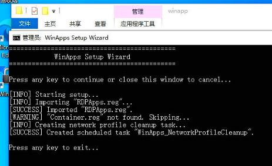

20250826
1. euler kernel build
Issue:
*** ERROR - ABI BREAKAGE WAS DETECTED ***
Solved via
vim SPECS/kernel.spec
%define with_kabichk 0
%else
%define with_kabichk 0
%endif
Kernel source file:
su - mock
rpm -ivh kernel-5.10.0-136.12.0.86.oe2203sp1.src.rpm
2. winapp

fixed ip address:
root@test-P860:/var/lib/libvirt/images# virsh dumpxml RDPWindows| grep mac
<type arch='x86_64' machine='pc-q35-8.2'>hvm</type>
<mac address='52:54:00:0e:95:70'/>
root@test-P860:/var/lib/libvirt/images# virsh net-edit "default"
<dhcp>
<range start="192.168.122.2" end="192.168.122.254"/>
<host mac="df:87:4c:75:e5:fb" name="RDPWindows" ip="192.168.122.2"/>
Network default XML configuration edited.
root@test-P860:/var/lib/libvirt/images# virsh net-destroy "default"
Network default destroyed
root@test-P860:/var/lib/libvirt/images# virsh net-start "default"
Network default started
root@test-P860:/var/lib/libvirt/images# virsh start RDPWindows
Domain 'RDPWindows' started
3. kernel build in euler
issue:
asciidoc is needed by kernel-5.10.0-136.12.0.86.aarch64
audit-libs-devel is needed by kernel-5.10.0-136.12.0.86.aarch64
binutils-devel is needed by kernel-5.10.0-136.12.0.86.aarch64
bison is needed by kernel-5.10.0-136.12.0.86.aarch64
clang >= 10.0.0 is needed by kernel-5.10.0-136.12.0.86.aarch64
dwarves is needed by kernel-5.10.0-136.12.0.86.aarch64
elfutils-devel is needed by kernel-5.10.0-136.12.0.86.aarch64
elfutils-libelf-devel is needed by kernel-5.10.0-136.12.0.86.aarch64
flex is needed by kernel-5.10.0-136.12.0.86.aarch64
gcc >= 3.4.2 is needed by kernel-5.10.0-136.12.0.86.aarch64
gettext is needed by kernel-5.10.0-136.12.0.86.aarch64
glibc-static is needed by kernel-5.10.0-136.12.0.86.aarch64
gtk2-devel is needed by kernel-5.10.0-136.12.0.86.aarch64
hmaccalc is needed by kernel-5.10.0-136.12.0.86.aarch64
hostname is needed by kernel-5.10.0-136.12.0.86.aarch64
java-1.8.0-openjdk is needed by kernel-5.10.0-136.12.0.86.aarch64
java-1.8.0-openjdk-devel is needed by kernel-5.10.0-136.12.0.86.aarch64
java-devel is needed by kernel-5.10.0-136.12.0.86.aarch64
libbabeltrace-devel is needed by kernel-5.10.0-136.12.0.86.aarch64
libcap-devel is needed by kernel-5.10.0-136.12.0.86.aarch64
libcap-ng-devel is needed by kernel-5.10.0-136.12.0.86.aarch64
libunwind-devel is needed by kernel-5.10.0-136.12.0.86.aarch64
libzstd-devel is needed by kernel-5.10.0-136.12.0.86.aarch64
llvm is needed by kernel-5.10.0-136.12.0.86.aarch64
m4 is needed by kernel-5.10.0-136.12.0.86.aarch64
module-init-tools is needed by kernel-5.10.0-136.12.0.86.aarch64
ncurses-devel is needed by kernel-5.10.0-136.12.0.86.aarch64
net-tools is needed by kernel-5.10.0-136.12.0.86.aarch64
newt-devel is needed by kernel-5.10.0-136.12.0.86.aarch64
numactl-devel is needed by kernel-5.10.0-136.12.0.86.aarch64
openssl is needed by kernel-5.10.0-136.12.0.86.aarch64
openssl-devel is needed by kernel-5.10.0-136.12.0.86.aarch64
pciutils-devel is needed by kernel-5.10.0-136.12.0.86.aarch64
perl is needed by kernel-5.10.0-136.12.0.86.aarch64
perl(Carp) is needed by kernel-5.10.0-136.12.0.86.aarch64
perl(ExtUtils::Embed) is needed by kernel-5.10.0-136.12.0.86.aarch64
perl-devel is needed by kernel-5.10.0-136.12.0.86.aarch64
perl-generators is needed by kernel-5.10.0-136.12.0.86.aarch64
python3-devel is needed by kernel-5.10.0-136.12.0.86.aarch64
python3-docutils is needed by kernel-5.10.0-136.12.0.86.aarch64
rsync is needed by kernel-5.10.0-136.12.0.86.aarch64
xmlto is needed by kernel-5.10.0-136.12.0.86.aarch64
xz-devel is needed by kernel-5.10.0-136.12.0.86.aarch64
zlib-devel is needed by kernel-5.10.0-136.12.0.86.aarch64
steps
1 sed -E 's#https?://(repo|mirrors)\.openeuler\.org/#http://mirrors.ustc.edu.cn/openeuler/#g' -i.bak /etc/yum.repos.d/openEuler.repo
2 yum makecache
3 useradd -m mock
4 cd /home/mock/
5 ls
6 cd rpmbuild/
7 ls
8 cd SPECS/
9 ls
10 yum-builddp kernel.spec
11 yum install yum-utils
12 yum search yum-builddp
13 yum install yum-utils
14 yum install make
15 yum install yum-utils
16 yum search yum-utils
17 ls
18 grep -E '^(Requires|BuildRequires):' kernel.spec
19 grep -E '^(Requires|BuildRequires):' kernel.spec| awk '{print $2}' | sort -u > dependencies.txt
20 cat dependencies.txt
21 dnf builddep kernel.spec
22 rpmbuild -ba kernel.spec
23 yum install rpmbuild
24 yum install rpm-builder
25 yum search rpm
26 yum install rpm-build
27 rpmbuild -ba kernel.spec
28 su - mock
29 yum install sudo
30 sudo -i su
31 yum install util-linux
32 su - mock
33 ls